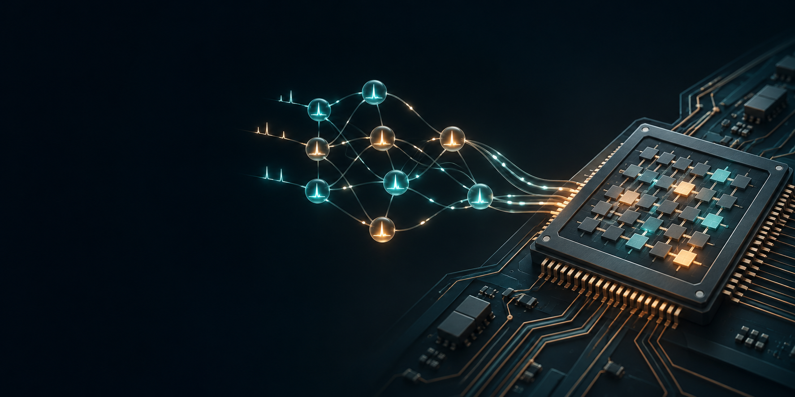

M.Sc. THESIS / 2023—2026
FPGA-Based Acceleration of Spiking Neural Networks Using the Posit Number System
Resource-efficient neural inference through SNN architectures, low-precision computation, and FPGA-oriented design trade-offs.
COMPUTER ARCHITECTURE / AI SYSTEMS
I design efficient AI across two scales: the numerical and hardware choices that shape neural computation, and the systems that make modern models useful in practice.
MODEL DESIGN → NUMERICAL REPRESENTATION → HARDWARE → DEPLOYED INTELLIGENCE
One practice, two perspectives
THE HARDWARE LENS
My graduate research investigates efficient neural computation at the boundary of algorithm and architecture: FPGA-based spiking neural networks, low-precision arithmetic, and hardware–software co-design.
That work includes Posit arithmetic, compensated accumulation, and CETP — a control-encoded tapered-precision format developed to simplify numerical decoding for efficient neural inference.

THE SYSTEMS LENS
As an AI / MLOps Engineer, I build private AI services around local LLM serving, retrieval, knowledge graphs, and tool-using agents — with deployment constraints, data privacy, and operational reliability in view.
My recent work spans vLLM and SGLang serving, multi-GPU Transformer execution, GraphRAG with Neo4j, and an MCP-based HR agent connected to backend services.
M.Sc. THESIS / 2023—2026
Resource-efficient neural inference through SNN architectures, low-precision computation, and FPGA-oriented design trade-offs.
AI SYSTEMS / PRODUCTION
Private inference infrastructure with vLLM, SGLang, and TEI; an HR agent using a local JEV LLM, MCP, and tool/function calling.
KNOWLEDGE SYSTEMS
Graph-backed retrieval and natural-language access to connected data using embeddings, LangChain, and Neo4j knowledge graphs.
EDGE AI / IEEE ICEE 2026
Research on deploying quantized Transformer models under edge-oriented constraints.
OPEN SOURCE
An end-to-end workflow spanning training, quantization, optimization, and FPGA-oriented CNN deployment with HLS.
EDUCATION
Computer Architecture
Amirkabir University of Technology (Tehran Polytechnic)
2023—2026 · GPA 3.56 / 4.00
Thesis supervised by Prof. Morteza Saheb Zamani.
SELECTED PUBLICATIONS
01 Low-Precision POSIT Arithmetic for Spiking Neural Networks with Kahan Summation IEEE ICSPIS, 2025 ↗02 Edge Deployment of Quantized Transformer Models for Remaining Useful Life Prediction IEEE ICEE, 2026 ↗03 Beyond One-Hot: CatBoost for Heating and Cooling Load Prediction IEEE IKT, 2025 ↗TEACHING & ACADEMIC SERVICE
Teaching Assistant at Amirkabir University of Technology for Advanced Computer Architecture, Memory Technologies, Machine Learning, Applied Machine Learning, Distributed Systems, Digital Electronics, and Network Devices Architecture. Laboratory / Workshop Instructor for Computer Architecture, Operating Systems, Logic Design, and C Programming.
LET’S CONNECT
I’m interested in research and engineering conversations where model efficiency, architecture, and real-world AI systems meet.
s.naghizadeh01@gmail.com ↗github.com/shayan-naghizadeh ↗